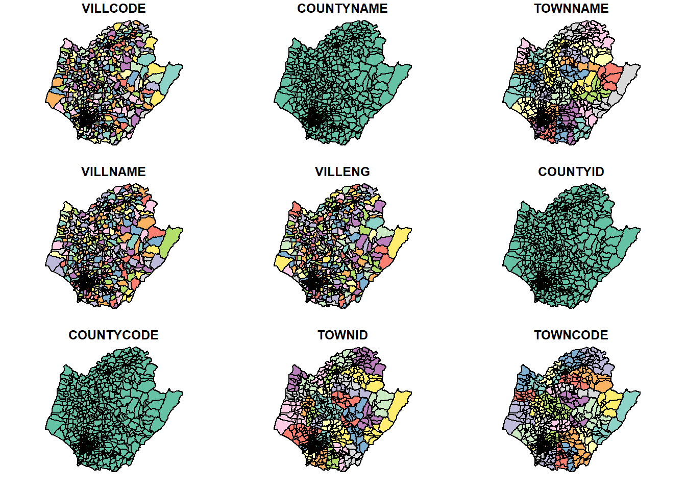
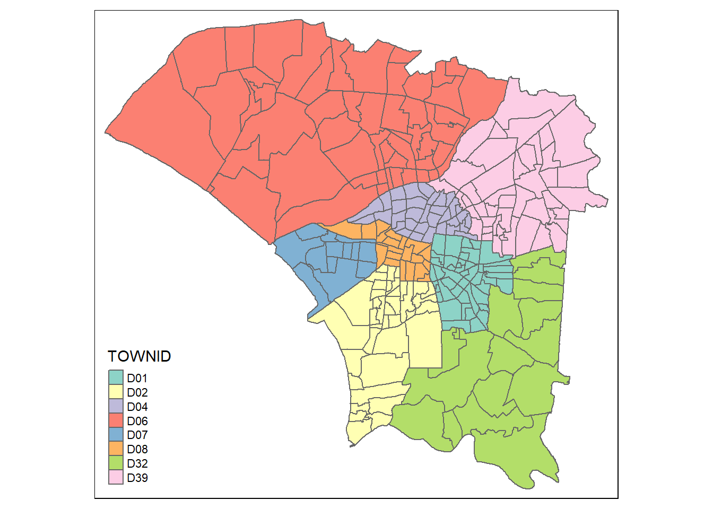
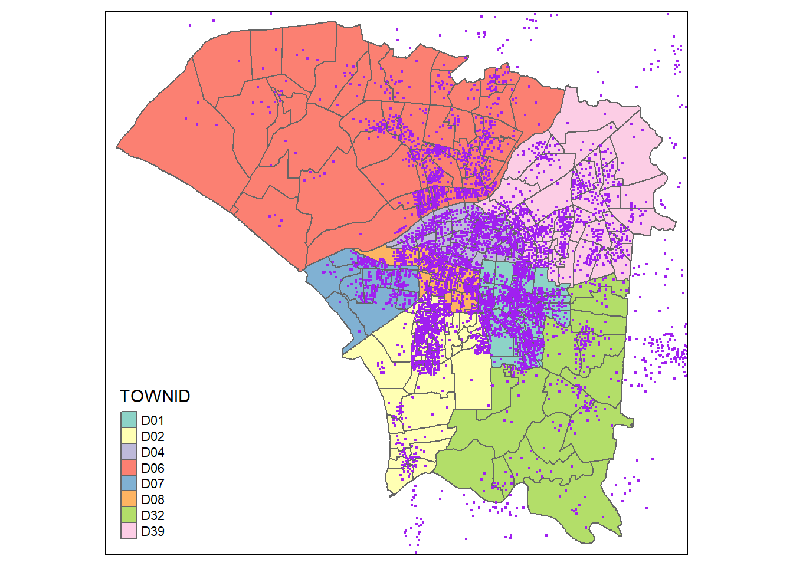
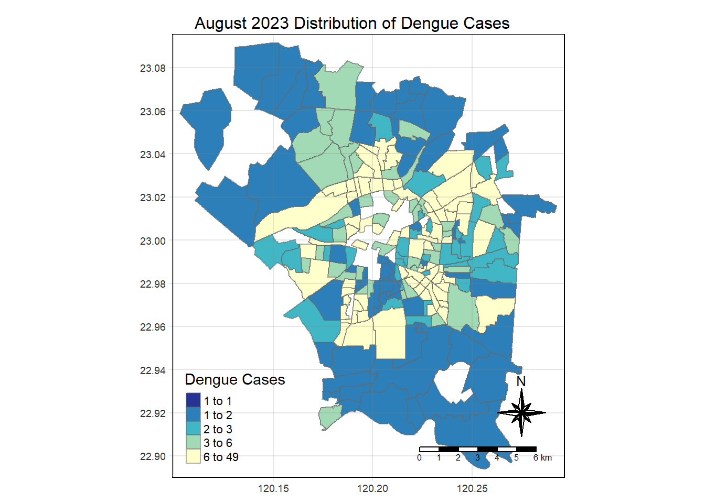
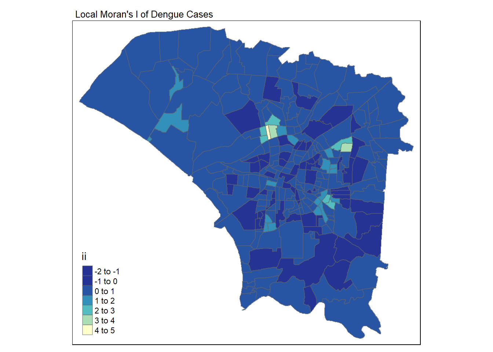
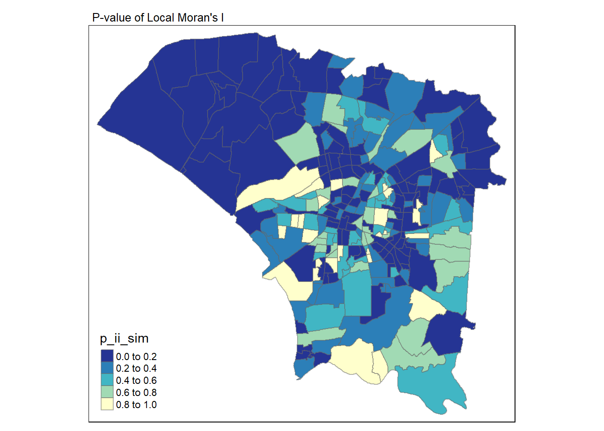
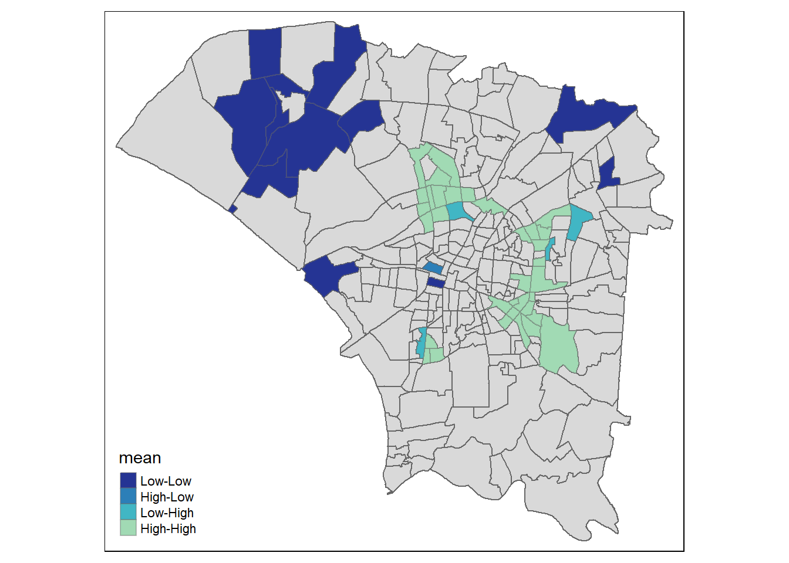
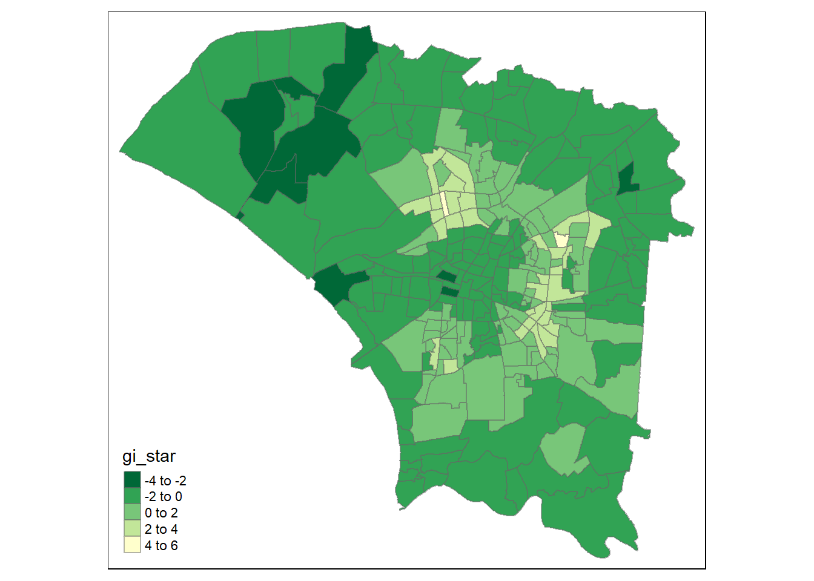
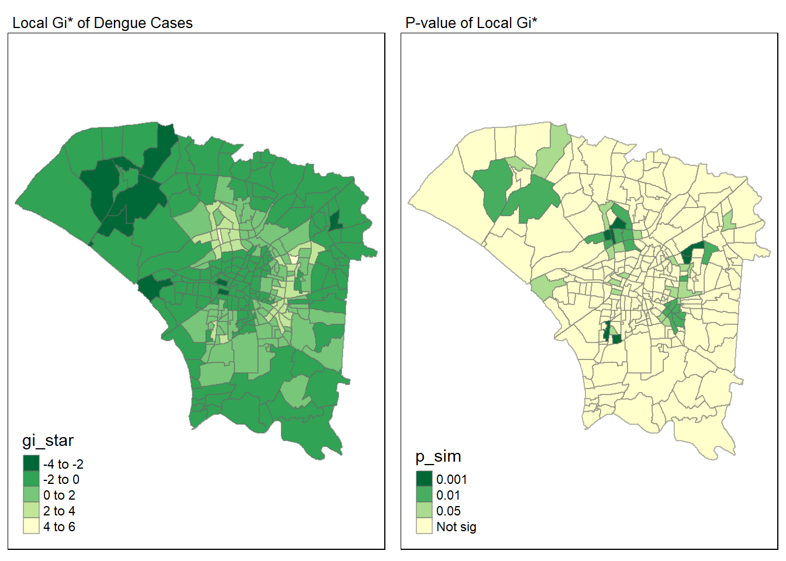
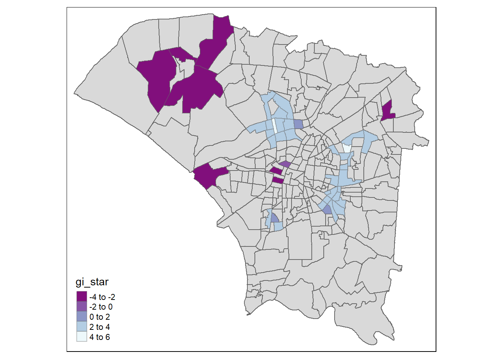

pacman::p_load(sf, st, tidyverse, lubridate, spdep, tmap, knitr, ggplot2, smoothr, sfdep, lubridate, RColorBrewer)Take-home Exercise 2: Application of Spatial and Spatio-temporal Analysis Methods to Discover the Distribution of Dengue Fever in Tainan City, Taiwan
The Task
The specific tasks of this take-home exercise are as follows:
Using appropriate function of sf and tidyverse, preparing the following geospatial data layer:
a study area layer in sf polygon features. It must be at village level and confined to the D01, D02, D04, D06, D07, D08, D32 and D39 counties of Tainan City, Taiwan.
a dengue fever layer within the study area in sf point features. The dengue fever cases should be confined to epidemiology week 31-50, 2023.
a derived dengue fever layer in spacetime s3 class of sfdep. It should contain, among many other useful information, a data field showing number of dengue fever cases by village and by epidemiology week.
Using the extracted data, perform global spatial autocorrelation analysis by using sfdep methods.
Using the extracted data, perform local spatial autocorrelation analysis by using sfdep methods.
Using the extracted data, perform emerging hotspot analysis by using sfdep methods.
Describe the spatial patterns revealed by the analysis above.
Importing Packages
*Importing Datasets to R Environment**
Tainan Dataset
tainan <- st_read(dsn = "data/geospatial",
layer = "TAINAN_VILLAGE")Reading layer `TAINAN_VILLAGE' from data source
`C:\Feliciaeng29\IS415-GAA\Take-home_Ex\Take-home_Ex02\data\geospatial'
using driver `ESRI Shapefile'
Simple feature collection with 649 features and 10 fields
Geometry type: POLYGON
Dimension: XY
Bounding box: xmin: 120.0269 ymin: 22.88751 xmax: 120.6563 ymax: 23.41374
Geodetic CRS: TWD97head(tainan, 5)Simple feature collection with 5 features and 10 fields
Geometry type: POLYGON
Dimension: XY
Bounding box: xmin: 120.053 ymin: 22.93251 xmax: 120.2905 ymax: 23.14345
Geodetic CRS: TWD97
VILLCODE COUNTYNAME TOWNNAME VILLNAME VILLENG COUNTYID COUNTYCODE
1 67000280002 臺南市 歸仁區 六甲里 Liujia Vil. D 67000
2 67000350032 臺南市 安南區 青草里 Qingcao Vil. D 67000
3 67000150009 臺南市 七股區 溪南里 Xinan Vil. D 67000
4 67000150010 臺南市 七股區 七股里 Qigu Vil. D 67000
5 67000150008 臺南市 七股區 龍山里 Longshan Vil. D 67000
TOWNID TOWNCODE NOTE geometry
1 D33 67000280 <NA> POLYGON ((120.2725 22.95868...
2 D06 67000350 <NA> POLYGON ((120.1176 23.08387...
3 D22 67000150 <NA> POLYGON ((120.121 23.1355, ...
4 D22 67000150 <NA> POLYGON ((120.1312 23.1371,...
5 D22 67000150 <NA> POLYGON ((120.0845 23.13503...Let’s visualise the dataset that was just imported
plot(tainan)
In this case, st_transform(tainan, CRS=3414) is not needed
st_crs(tainan)Coordinate Reference System:
User input: TWD97
wkt:
GEOGCRS["TWD97",
DATUM["Taiwan Datum 1997",
ELLIPSOID["GRS 1980",6378137,298.257222101,
LENGTHUNIT["metre",1]]],
PRIMEM["Greenwich",0,
ANGLEUNIT["degree",0.0174532925199433]],
CS[ellipsoidal,2],
AXIS["geodetic latitude (Lat)",north,
ORDER[1],
ANGLEUNIT["degree",0.0174532925199433]],
AXIS["geodetic longitude (Lon)",east,
ORDER[2],
ANGLEUNIT["degree",0.0174532925199433]],
USAGE[
SCOPE["Horizontal component of 3D system."],
AREA["Taiwan, Republic of China - onshore and offshore - Taiwan Island, Penghu (Pescadores) Islands."],
BBOX[17.36,114.32,26.96,123.61]],
ID["EPSG",3824]]Dengue Dataset
dengue <- read_csv("data/aspatial/Dengue_Daily.csv")
dengue# A tibble: 106,861 × 26
發病日 個案研判日 通報日 性別 年齡層 居住縣市 居住鄉鎮 居住村里
<date> <chr> <date> <chr> <chr> <chr> <chr> <chr>
1 1998-01-02 None 1998-01-07 男 40-44 屏東縣 屏東市 None
2 1998-01-03 None 1998-01-14 男 30-34 屏東縣 東港鎮 None
3 1998-01-13 None 1998-02-18 男 55-59 宜蘭縣 宜蘭市 None
4 1998-01-15 None 1998-01-23 男 35-39 高雄市 苓雅區 None
5 1998-01-20 None 1998-02-04 男 55-59 宜蘭縣 五結鄉 None
6 1998-01-22 None 1998-02-19 男 20-24 桃園市 蘆竹區 None
7 1998-01-23 None 1998-02-02 男 40-44 新北市 新店區 None
8 1998-01-26 None 1998-02-19 女 65-69 台北市 北投區 None
9 1998-02-11 None 1998-02-13 女 25-29 台南市 南區 None
10 1998-02-16 None 1998-02-24 男 20-24 高雄市 楠梓區 None
# ℹ 106,851 more rows
# ℹ 18 more variables: 最小統計區 <chr>, 最小統計區中心點X <chr>,
# 最小統計區中心點Y <chr>, 一級統計區 <chr>, 二級統計區 <chr>,
# 感染縣市 <chr>, 感染鄉鎮 <chr>, 感染村里 <chr>, 是否境外移入 <chr>,
# 感染國家 <chr>, 確定病例數 <dbl>, 居住村里代碼 <chr>, 感染村里代碼 <chr>,
# 血清型 <chr>, 內政部居住縣市代碼 <chr>, 內政部居住鄉鎮代碼 <chr>,
# 內政部感染縣市代碼 <chr>, 內政部感染鄉鎮代碼 <chr>summary(dengue) 發病日 個案研判日 通報日
Min. :1998-01-02 Length:106861 Min. :1998-01-07
1st Qu.:2014-10-28 Class :character 1st Qu.:2014-10-31
Median :2015-09-29 Mode :character Median :2015-10-01
Mean :2016-03-31 Mean :2016-04-03
3rd Qu.:2023-06-19 3rd Qu.:2023-06-23
Max. :2024-01-29 Max. :2024-01-29
性別 年齡層 居住縣市 居住鄉鎮
Length:106861 Length:106861 Length:106861 Length:106861
Class :character Class :character Class :character Class :character
Mode :character Mode :character Mode :character Mode :character
居住村里 最小統計區 最小統計區中心點X 最小統計區中心點Y
Length:106861 Length:106861 Length:106861 Length:106861
Class :character Class :character Class :character Class :character
Mode :character Mode :character Mode :character Mode :character
一級統計區 二級統計區 感染縣市 感染鄉鎮
Length:106861 Length:106861 Length:106861 Length:106861
Class :character Class :character Class :character Class :character
Mode :character Mode :character Mode :character Mode :character
感染村里 是否境外移入 感染國家 確定病例數
Length:106861 Length:106861 Length:106861 Min. :1
Class :character Class :character Class :character 1st Qu.:1
Mode :character Mode :character Mode :character Median :1
Mean :1
3rd Qu.:1
Max. :2
居住村里代碼 感染村里代碼 血清型 內政部居住縣市代碼
Length:106861 Length:106861 Length:106861 Length:106861
Class :character Class :character Class :character Class :character
Mode :character Mode :character Mode :character Mode :character
內政部居住鄉鎮代碼 內政部感染縣市代碼 內政部感染鄉鎮代碼
Length:106861 Length:106861 Length:106861
Class :character Class :character Class :character
Mode :character Mode :character Mode :character
Data Preprocessing
Dengue Dataset
As stated a dengue fever layer within the study area in sf point features. The dengue fever cases should be confined to epidemiology week 31-50, 2023.
Convert the date column to Date format
dengue$發病日 <- as.Date(dengue$發病日)Extract epidemiology week numbers from the onset date column
dengue$epi_week_number <- as.numeric(format(dengue$發病日, "%V"))Define the desired epidemiology week range
start_epi_week <- 31
end_epi_week <- 50Define the year of interest
study_year <- 2023Filter rows based on the specified epidemiology week range and study year
study_dengue_cases <- dengue %>%
filter(epi_week_number >= start_epi_week &
epi_week_number <= end_epi_week &
year(發病日) == study_year)Check the data
summary(study_dengue_cases) 發病日 個案研判日 通報日
Min. :2023-07-31 Length:25480 Min. :2023-07-31
1st Qu.:2023-09-11 Class :character 1st Qu.:2023-09-13
Median :2023-10-01 Mode :character Median :2023-10-03
Mean :2023-10-03 Mean :2023-10-05
3rd Qu.:2023-10-26 3rd Qu.:2023-10-27
Max. :2023-12-17 Max. :2023-12-23
性別 年齡層 居住縣市 居住鄉鎮
Length:25480 Length:25480 Length:25480 Length:25480
Class :character Class :character Class :character Class :character
Mode :character Mode :character Mode :character Mode :character
居住村里 最小統計區 最小統計區中心點X 最小統計區中心點Y
Length:25480 Length:25480 Length:25480 Length:25480
Class :character Class :character Class :character Class :character
Mode :character Mode :character Mode :character Mode :character
一級統計區 二級統計區 感染縣市 感染鄉鎮
Length:25480 Length:25480 Length:25480 Length:25480
Class :character Class :character Class :character Class :character
Mode :character Mode :character Mode :character Mode :character
感染村里 是否境外移入 感染國家 確定病例數
Length:25480 Length:25480 Length:25480 Min. :1
Class :character Class :character Class :character 1st Qu.:1
Mode :character Mode :character Mode :character Median :1
Mean :1
3rd Qu.:1
Max. :1
居住村里代碼 感染村里代碼 血清型 內政部居住縣市代碼
Length:25480 Length:25480 Length:25480 Length:25480
Class :character Class :character Class :character Class :character
Mode :character Mode :character Mode :character Mode :character
內政部居住鄉鎮代碼 內政部感染縣市代碼 內政部感染鄉鎮代碼 epi_week_number
Length:25480 Length:25480 Length:25480 Min. :31.00
Class :character Class :character Class :character 1st Qu.:37.00
Mode :character Mode :character Mode :character Median :39.00
Mean :39.84
3rd Qu.:43.00
Max. :50.00 Select and rename columns
dengue <- study_dengue_cases %>%
rename('x' = 最小統計區中心點X,
'y' = 最小統計區中心點Y,
'COUNTYNAME' = 居住縣市,
'VILLNAME' = 居住村里,
'TOWNNAME' = 居住鄉鎮)Check the form of x and y coordinates
class(dengue$`x`)[1] "character"class(dengue$`y`)[1] "character"Changing it to numerical for x and y coords
dengue$`x` <- as.numeric(dengue$`x`)
dengue$`y` <- as.numeric(dengue$`y`)As it can be seen: Warning: NAs introduced by coercionWarning: NAs introduced by coercion
Lets remove the NA values from all the columns
dengue <- na.omit(dengue)Double check the data before moving on
class(dengue$`x`)[1] "numeric"class(dengue$`y`)[1] "numeric"Convert to an sf object with POINT geometry
filtered_dengue <- st_as_sf(dengue, coords = c('x', 'y'), crs = st_crs(tainan))Remove missing values
dengue <- dengue[!(dengue$VILLNAME == "None"), ]Group by village and calculate the number of dengue cases
dengue_grouped <- dengue %>%
group_by(TOWNNAME, VILLNAME, epi_week_number) %>%
summarise(dengueCases = sum(確定病例數), .groups = 'drop')Tainan Dataset
As stated: a study area layer in sf polygon features. It must be at village level and confined to the D01, D02, D04, D06, D07, D08, D32 and D39 counties of Tainan City, Taiwan.
Retrieve D01, D02, D04, D06, D07, D08, D32 and D39 counties of Tainan City, Taiwan.
So lets use the TOWNID to filter out only the specified countries. In this case we can also use subset(select = -NOTE) to exclude it from the dataframe.
tainan <- tainan[tainan$TOWNID %in% c("D01", "D02", "D04", "D06", "D07", "D08", "D32", "D39"), ]head(tainan)Simple feature collection with 6 features and 10 fields
Geometry type: POLYGON
Dimension: XY
Bounding box: xmin: 120.0936 ymin: 22.9156 xmax: 120.2585 ymax: 23.08827
Geodetic CRS: TWD97
VILLCODE COUNTYNAME TOWNNAME VILLNAME VILLENG COUNTYID COUNTYCODE
2 67000350032 臺南市 安南區 青草里 Qingcao Vil. D 67000
18 67000270011 臺南市 仁德區 保安里 Bao'an Vil. D 67000
66 67000370005 臺南市 中西區 赤嵌里 Chihkan Vil. D 67000
67 67000330004 臺南市 南區 大成里 Dacheng Vil. D 67000
68 67000350028 臺南市 安南區 城北里 Chengbei Vil. D 67000
69 67000350030 臺南市 安南區 城南里 Chengnan Vil. D 67000
TOWNID TOWNCODE NOTE geometry
2 D06 67000350 <NA> POLYGON ((120.1176 23.08387...
18 D32 67000270 <NA> POLYGON ((120.2304 22.93544...
66 D08 67000370 <NA> POLYGON ((120.2012 22.99966...
67 D02 67000330 <NA> POLYGON ((120.1985 22.98147...
68 D06 67000350 <NA> POLYGON ((120.1292 23.06512...
69 D06 67000350 <NA> POLYGON ((120.1246 23.06904...Lets plot to visualise
tmap_mode('plot')
tm_shape(tainan) +
tm_polygons("TOWNID") 
union_tainan <- st_union(tainan)
plot(union_tainan)
Visualizing 2 datasets together
Visualizing the distribution of dengue cases on the tainan map
tm_shape(tainan) +
tm_polygons("TOWNID") +
tm_shape(filtered_dengue) +
tm_dots(col = "purple")
Combining both data frame into one
dengue_in_tainan <- left_join(tainan, dengue_grouped, by = c("TOWNNAME","VILLNAME"))Visualizing Choropleth Map
# Define a new color palette
colorRamp <- brewer.pal(n = 5, name = "YlGnBu")
colorRamp <- rev(colorRamp)
# Fill missing values (NA) with 0
dengue_in_tainan$dengueCases[is.na(dengue_in_tainan$dengueCases)] <- 0
# Function to plot for a given month
plot_for_month <- function(data, month, week_start, week_end) {
month_data <- data %>%
filter(epi_week_number >= week_start & epi_week_number <= week_end)
tmap_mode("plot")
tm_shape(month_data) +
tm_fill("dengueCases",
style = "quantile",
palette = colorRamp,
title = "Dengue Cases") +
tm_layout(main.title = paste(month, "2023 Distribution of Dengue Cases"),
main.title.position = "center",
main.title.size = 1.0,
legend.height = 0.55,
legend.width = 0.55,
frame = TRUE) +
tm_borders(alpha = 0.5) +
tm_compass(type = "8star", size = 3) +
tm_scale_bar() +
tm_grid(alpha = 0.2)
}
# Plot for each month
plot_for_month(dengue_in_tainan, "August", 31, 35)
plot_for_month(dengue_in_tainan, "September", 36, 39)
plot_for_month(dengue_in_tainan, "October", 40, 44)
plot_for_month(dengue_in_tainan, "November", 45, 48)
Global Spatial Autocorrelation
Contiguity weights: Queen’s method
We compute spatial contiguity relationships among geometries stored in a data frame, calculates spatial weights based on these relationships,and adds the resulting variables to the data frame.
Grouping data by village name and summarizing dengue cases
dengue_grouped <- dengue %>%
group_by(VILLNAME) %>%
summarise(DengueCases = sum(確定病例數))Removing rows with ‘None’ as village name
dengue_grouped <- dengue_grouped[!(dengue_grouped$VILLNAME == "None"), ]Joining the filtered Tainan data with the grouped dengue data
# Perform the join
tainan_dengue <- left_join(tainan, dengue_grouped, by = "VILLNAME")Replacing NA values in DengueCases with 0
tainan_dengue$DengueCases[is.na(tainan_dengue$DengueCases)] <- 0Calculating spatial weights
spatial_weights <- tainan_dengue %>%
mutate(Neighbors = st_contiguity(geometry, queen=TRUE),
Weights = st_weights(Neighbors, style = "W"),
.before = 1)Examining the contents of the spatial weights matrix
glimpse(spatial_weights)Rows: 258
Columns: 14
$ Neighbors <nb> <6, 118, 160>, <126, 128, 138, 168, 222>, <68, 69, 172, 181…
$ Weights <list> <0.3333333, 0.3333333, 0.3333333>, <0.2, 0.2, 0.2, 0.2, 0…
$ VILLCODE <chr> "67000350032", "67000270011", "67000370005", "67000330004"…
$ COUNTYNAME <chr> "臺南市", "臺南市", "臺南市", "臺南市", "臺南市", "臺南市"…
$ TOWNNAME <chr> "安南區", "仁德區", "中西區", "南區", "安南區", "安南區", …
$ VILLNAME <chr> "青草里", "保安里", "赤嵌里", "大成里", "城北里", "城南里"…
$ VILLENG <chr> "Qingcao Vil.", "Bao'an Vil.", "Chihkan Vil.", "Dacheng Vi…
$ COUNTYID <chr> "D", "D", "D", "D", "D", "D", "D", "D", "D", "D", "D", "D"…
$ COUNTYCODE <chr> "67000", "67000", "67000", "67000", "67000", "67000", "670…
$ TOWNID <chr> "D06", "D32", "D08", "D02", "D06", "D06", "D08", "D06", "D…
$ TOWNCODE <chr> "67000350", "67000270", "67000370", "67000330", "67000350"…
$ NOTE <chr> NA, NA, NA, NA, NA, NA, NA, NA, NA, NA, NA, NA, NA, NA, NA…
$ DengueCases <dbl> 2, 33, 111, 29, 6, 13, 37, 48, 108, 66, 26, 2, 5, 11, 24, …
$ geometry <POLYGON [°]> POLYGON ((120.1176 23.08387..., POLYGON ((120.2304…Computing Global Moran’s I
Calculate Global Moran’s I
moranI_result <- global_moran(spatial_weights$DengueCases,
spatial_weights$Neighbors,
spatial_weights$Weights)Print the result
glimpse(moranI_result)List of 2
$ I: num 0.397
$ K: num 4.83Performing Global Moran’s I test
Perform the Moran’s I test
global_moran_test(spatial_weights$DengueCases,
spatial_weights$Neighbors,
spatial_weights$Weights)
Moran I test under randomisation
data: x
weights: listw
Moran I statistic standard deviate = 10.902, p-value < 2.2e-16
alternative hypothesis: greater
sample estimates:
Moran I statistic Expectation Variance
0.396838835 -0.003891051 0.001351108 Performing Global Moran’s I permutation test
Set seed for reproducibility
set.seed(1234)Perform Monte Carlo simulation
global_moran_perm(spatial_weights$DengueCases,
spatial_weights$Neighbors,
spatial_weights$Weights,
nsim = 99)
Monte-Carlo simulation of Moran I
data: x
weights: listw
number of simulations + 1: 100
statistic = 0.39684, observed rank = 100, p-value < 2.2e-16
alternative hypothesis: two.sidedThe results of your Monte Carlo simulation are given as a list with two values: I and K.
Iis the Moran’s I statistic, which measures spatial autocorrelation. A positive Moran’s I value (like 0.397 in your case) indicates positive spatial autocorrelation, which means that similar values tend to be located near each other. In the context of your analysis, this suggests that dengue cases are not randomly distributed across counties, but rather, counties with similar numbers of dengue cases tend to be located near each other.Kis likely the test statistic for the permutation test, although without more context it’s hard to say for sure. In general, the permutation test is used to determine the significance of the Moran’s I statistic by comparing it to a distribution of Moran’s I values obtained by randomly permuting the spatial locations of the data.
The above statistical analysis reveals a p-value less than the alpha threshold of 0.05. This provides substantial evidence to dismiss the null hypothesis, which suggests that the spatial distribution of dengue cases across counties is random and spatially independent. Given that the Moran’s I statistic exceeds 0, it’s reasonable to conclude that there’s a tendency for clustering in the spatial distribution of dengue cases.
Local Spatial Autocorrelation Analysis
Computing local Moran’s I
Compute local Moran’s I statistic for spatial autocorrelation
lisa <- spatial_weights %>%
mutate(local_moran = local_moran(
DengueCases, Neighbors, Weights, nsim = 99),
.before = 1) %>%
unnest(local_moran)Visualising local Moran’s I
Define a new color palette
colorRamp <- brewer.pal(n = 5, name = "YlGnBu")
colorRamp <- rev(colorRamp)Prepare a choropleth map using the ii field
tmap_mode("plot")
tm_shape(lisa) +
tm_fill("ii", palette = colorRamp) +
tm_borders(alpha = 0.5) +
tm_view(set.zoom.limits = c(6,8)) +
tm_layout(main.title = "Local Moran's I of Dengue Cases",
main.title.size = 0.8)
Visualising p-value of local Moran’s I
Prepare a choropleth map using the p_ii_sim field
tmap_mode("plot")
tm_shape(lisa) +
tm_fill("p_ii_sim", palette = colorRamp) +
tm_borders(alpha = 0.5) +
tm_layout(main.title = "P-value of Local Moran's I",
main.title.size = 0.8)
Visualising local Moran’s I and p-value
Plot both maps next to each other for comparison
tmap_mode("plot")
localmoral_map <- tm_shape(lisa) +
tm_fill("ii", palette = colorRamp) +
tm_borders(alpha = 0.5) +
tm_view(set.zoom.limits = c(6,8)) +
tm_layout(main.title = "Local Moran's I of Dengue Cases",
main.title.size = 0.8)
pvalue_map <- tm_shape(lisa) +
tm_fill("p_ii",
breaks = c(0, 0.001, 0.01, 0.05, 1),
labels = c("0.001", "0.01", "0.05", "Not sig"),
palette = colorRamp) +
tm_borders(alpha = 0.5) +
tm_layout(main.title = "P-value of Local Moran's I",
main.title.size = 0.8)
tmap_arrange(localmoral_map, pvalue_map, ncol = 2)Visualising LISA map
Filter significant values
lisa_sig <- lisa %>%
filter(p_ii < 0.05)Plot LISA map
tmap_mode("plot")
tm_shape(lisa) +
tm_polygons() +
tm_borders(alpha = 0.5) +
tm_shape(lisa_sig) +
tm_fill("mean", palette = colorRamp) +
tm_borders(alpha = 0.4)
Hot Spot and Cold Spot Area Analysis (HCSA)
Compute local Gi* statistic for spatial autocorrelation
sw_nb <- tainan_dengue %>%
mutate(Neighbors = include_self(st_contiguity(geometry)),
Weights = st_inverse_distance(Neighbors, geometry,
scale = 1,
alpha = 1),
.before = 1)Calculate the Local Gi* statistic for each observation
Hot_Cold_Spot_Analysis <- sw_nb %>%
mutate(Local_Gi = local_gstar_perm(
DengueCases, Neighbors, Weights, nsim = 99),
.before = 1) %>%
unnest(Local_Gi)Visualising Gi*
Define a new color palette
colorRamp <- brewer.pal(n = 5, name = "YlGn")
colorRamp <- rev(colorRamp)Prepare a choropleth map using the gi_star field
tmap_mode("plot")
tm_shape(Hot_Cold_Spot_Analysis) +
tm_fill("gi_star", palette = colorRamp) +
tm_borders(alpha = 0.5) +
tm_view(set.zoom.limits = c(6,8))
Visualising p-value of Hot_Cold_Spot_Analysis
Prepare a choropleth map using the p_sim field
tmap_mode("plot")
tm_shape(Hot_Cold_Spot_Analysis) +
tm_fill("p_sim", palette = colorRamp) +
tm_borders(alpha = 0.5)Visualising local Hot_Cold_Spot_Analysis
# Plot both maps next to each other for comparison
tmap_mode("plot")Create a map for Local Gi* of Dengue Cases
localGi_map <- tm_shape(Hot_Cold_Spot_Analysis) +
tm_fill("gi_star", palette = colorRamp) +
tm_borders(alpha = 0.5) +
tm_view(set.zoom.limits = c(6,8)) +
tm_layout(main.title = "Local Gi* of Dengue Cases",
main.title.size = 0.8)Create a map for P-value of Local Gi*
pValue_map <- tm_shape(Hot_Cold_Spot_Analysis) +
tm_fill("p_sim",
breaks = c(0, 0.001, 0.01, 0.05, 1),
labels = c("0.001", "0.01", "0.05", "Not sig"),
palette = colorRamp) +
tm_borders(alpha = 0.5) +
tm_layout(main.title = "P-value of Local Gi*",
main.title.size = 0.8)Arrange the two maps side by side
tmap_arrange(localGi_map, pValue_map, ncol = 2)
Visualising hot spot and cold spot areas
Define a new color palette
colorRamp <- brewer.pal(n = 5, name = "BuPu")
colorRamp <- rev(colorRamp)Filter significant values (i.e., p-values less than 0.05)
Significant_HCSA <- Hot_Cold_Spot_Analysis %>%
filter(p_sim < 0.05)Plot the significant hot spot and cold spot areas
tmap_mode("plot")
tm_shape(Hot_Cold_Spot_Analysis) +
tm_polygons() +
tm_borders(alpha = 0.5) +
tm_shape(Significant_HCSA) +
tm_fill("gi_star", palette = colorRamp) +
tm_borders(alpha = 0.4)